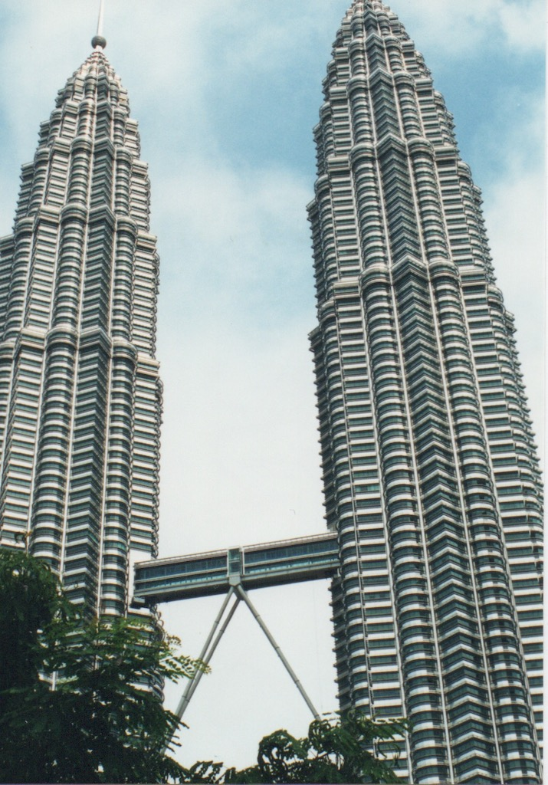
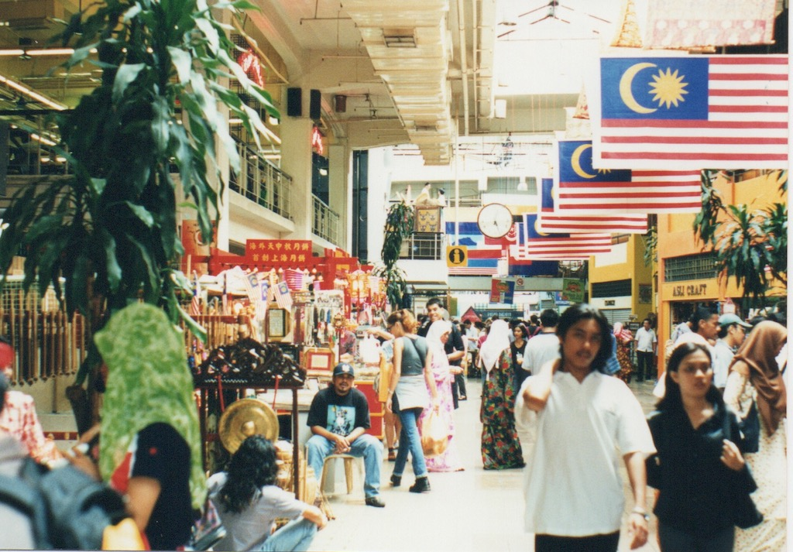
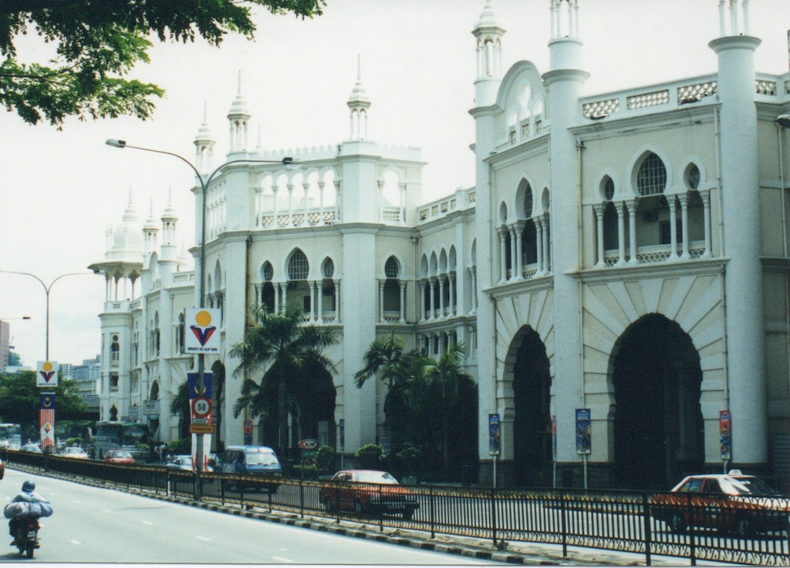

Malaysian Journal
My spell in Malaysia went from the middle of August 1999 through to the start of December that year, with a couple of short trips home along the way. I was origianally asked if I would like to go to Malaysia for a week to give some advice to our local office. It seems that they had won an order to automate a large petrochemical plant, but had failed to notice that there were some batch processes in the middle of it! So I went with the aim of helping them understand what they needed to do for these processes. Luckily, after three visits I was able to hand over to a Chinese engineer who was working in the Crawley office and was an experienced batch engineer. I later, once the plant was installed, went to the site (on the east coast) for a week to run a batch training course.
This is a collection of e-mail that I sent from Malaysia during that 3½ month period. Each is headed by the title of the message (usually the day on which it was written) and the date on which it was sent. By showing them this way I have also been able to include a few photos that I took whilst there.
Greetings from Shah Alam (19th August 1999)
Hello,
As you know, I arrived in the hotel at about 6:30 p.m. after a good flight. The worse part was getting from Victoria to Heathrow. Getting to Green Park (on the Piccadilly line) wasn't too bad but the trains out to Heathrow were packed. I had to stand most of the way, trying to keep my cases clear of others getting on and off. Plus it took me an hour and a half to get from Victoria to Heathrow. I think that on my return I will try the Heathrow to Paddington train that only takes 15 minutes.
Once at Heathrow it was easy. There was a huge queue at the Malaysian Airways desk but luckily that was for economy. Business and first class had their own check-in desk with no queue. And once checked-in I could go to their 'Golden Club' lounge and have drinks and snacks and read papers until the flight was due to board. Even then we were sent down after everyone else had boarded and used our own gangway on to the upper deck. I was sat next to someone from Glasgow who was travelling on to Melbourne. He worked for the National Bank of Australia who, it seems, own the Clydesdale Bank and Yorkshire Bank plus a few other financial institutions in the UK.
The flight was very comfortable (I actually forgot to take my travel sickness pills) but I did not sleep very much even though the seats had an extending leg rest, a good adjustable head rest and reclined well. Each seat also had its own TV screen that unfolded from one of the arms, so I watched Entrapment (Sean Connery and Catharine Zeta Jones) and which was partly filmed in Kuala Lumpur. According to the lady taxi driver from the airport the film did not show KL as it really is and to best effect.
The new KL International Airport is quite a bit further south than the one show on my map (the old airport) so we drove on a main highway through palm tree plantations (for palm oil) up to Shah Alam. My hotel is very close to the Blue Mosque so I asked for a room on that side, i.e. overlooking the mosque. What I had not realised is that they broadcast their prayers over a loudspeaker system several time per day, including five o'clock in the morning! In fact they are chanting now (it is 4:30 on Sunday afternoon). Otherwise the hotel is very comfortable. It seems that there is an excess of hotel rooms in Shah Alam so the rate for bed and breakfast is less than £25 per night. This morning after breakfast I tried out the gym and the pool, which is under cover, but with no side wall. I have just had a call from the deputy manager asking if I wanted to change my room since the security guard for the floor is sat just outside. I have no problem with that and can't see the point of packing up just to move rooms (and the chanting has stopped).
It is very warm here with varying degrees of cloud. This morning the sky was completely cloud covered but that gradually broke up to make a very sunny early afternoon. I had a call last night from Nizam, who is the project manager for the part of the project in which I am involved. He came here at midday and took me into KL for lunch. We just had a sandwich in the shopping mall at the base of the Petronas Towers (the tallest buildings in the world and which featured in the film I watched on the plane). I was somewhat surprised to see M&S and Body Shop plus numerous other well-known names. There was even a fish and chips shop! Everything is very western except that the shops are open from 10 to 10 seven days a week! Both Shah Alam and KL are very modern. They do not seem to have 'old' quarters.
This morning I took a walk around the lake by the Blue Mosque and through the main Plaza (where there was a children's basketball competition taking place) and looked around the Museum of Selangor (mainly because it was cooler in there). Most of the less tall buildings have very steep pitched roofs with bright blue glazed pan-tiles that look quite striking.
I have now had dinner in one of the hotel's four restaurants. I had a buffet that is basically as much as you can eat for £6.50! After some soup I had a plate full of fish dishes followed by a plate of meat dishes and then a plate of deserts and fruits. I couldn't identify most of what I ate but I avoided the dishes that were obviously squid and things that still had claws on them.
By 7:30 it is very dark and now there is lightening and thunder. There are storm drains everywhere so the place is designed for the wet. The rainy season, it seems, is split between June/July and December to February. At other times it usually rains heavily once a week. There is certainly no sign of the smog!
I hope to get an e-mail account set up tomorrow so that I can send this. Then I will let you know how things are going. It seems that I will move into the apartment on Wednesday or Thursday.
Love, David
Thursday (19th August 1999)
Hello,
As you can see I finally have an e-mail address here (djames@foxmay.com.my). We had our first meeting with the customer this morning in KL and are due back there tomorrow.
I also have a car. So I will try to find my way back to the hotel shortly (it is now 6:45). My apartment should be available on Saturday.
I will mail again soon,
Love, D
Friday (20th August 1999)
Hello,
I have not received any mail from any of you yet and I will not now be able to check my mail until Monday. You can send mail directly to this address rather than via Crawley (i.e. to djames@foxmay.com.my rather than to djames@foxboro.com). My car is an automatic Proton of indeterminate age. Proton are the Malaysian national car makers. I would not buy one!
I am still due to pick up my apartment key today (although it is now 5:15) and leave the hotel tomorrow. I may try to take the train into KL on either Saturday or Sunday if I feel brave. I certainly would not consider driving into KL. The traffic is chaotic and it would be very easy to get lost.
Phoning from the office is a problem in that they use some telephone provider for cheaper long distance calls and it is difficult to get any response from them. I will, however, continue to try.
In any case I will mail you on Monday.
Love, D
Sunday in C101A Kelana Parkview (23rd August 1999)
Hello,
I have read your Friday and Sunday messages so you have answered the following questions that I wrote on Sunday.
Hope you are well and not working too hard. How is Meg? What is the weather like now? How did your Mother get on at the hospital?
News of the UK is difficult to come by. I bought The Weekly Telegraph today (for over £2) which is a tabloid sized paper with extracts from the week's Telegraph.
On Friday I was given the keys to my apartment and taken over to see it. Firstly I discovered that you need the memory and the audacity of a London taxi driver to get here. I need to use one toll road from the office in Shah Alam to Kelana Jaya and a different one back to the office. Also, Malaysia is the land of U-turns! At one point I join a dual-carriageway from the left, then immediately get into the outside lane so as to make a U-turn into the outside lane of the other carriageway. Then I have to cross the flow of traffic to the left (avoiding maniac motor-cyclists who are everywhere, road-works which suddenly appear and cars that just drift from one lane to the next) so as to turn into my road.
Then I discovered that my apartment is actually a bed-sit. It is one room with a divider separating the kitchen from the bedroom. There is then a small shower room with toilet and wash basin. The kitchen only has a cold tap. The wash basin has a hot tap but no water comes out of it. The shower is electric but I have not yet dared to try it. That is a delight for later this evening.
The other noticeable feature of the apartment was that it had some furniture but no bed linen, crockery, towels, cooking utensils or even a kettle. So I extended my stay at the hotel to include Saturday night and went shopping. I was directed by the apartment block management to a shopping complex some five miles away where there is an IKEA that is presently having a sale. So I bought all I could think of and now am compiling a list of things that I forgot. I had to return there today (the shops are open seven days a week from 10 am to 10 pm) to exchange some sheets for larger ones. There are two single beds but they are obviously wider than normal singles. I will try to get someone to buy the other things that I need tomorrow.
 There are three blocks, A, B and C (I am in C), on three sides of a square. In the middle are palm trees and a swimming pool. I had thought of trying it but it keeps raining, heavily. The blocks are some 12 stories high but I am on the ground floor with a balcony that opens on to the central gardens. However, there is an iron grill over both the front door and the patio doors that need to first be unlocked. I don't know if they are trying to keep the locals out or me in!
There are three blocks, A, B and C (I am in C), on three sides of a square. In the middle are palm trees and a swimming pool. I had thought of trying it but it keeps raining, heavily. The blocks are some 12 stories high but I am on the ground floor with a balcony that opens on to the central gardens. However, there is an iron grill over both the front door and the patio doors that need to first be unlocked. I don't know if they are trying to keep the locals out or me in!
The kitchen has a fridge/freezer and four gas rings with a gas cylinder in the cupboard. Otherwise there is a TV, on which I can only receive Malaysian and Chinese channels, and the noises of my fellow tenants and what I assume is the plumbing. There is, however, a cafe near the pool that is run by Zee, a Malaysian tax accountant who spent 19 years in Texas running a cafe part-time! I had lunch there today and it looks a better bet than the McDonalds in the small parade of shops at the front! There is also a bookshop, Italian restaurant, opticians, bank and electrical shop, but I have not yet found anywhere locally where you can buy food (as in supermarket).
Malaysians are very car (and motorbike) dependant and shopping and TV seem to be their main past-times. Everything needs to be 'modern' and 'high-tech'.
Part of me wants to get the work done as soon as possible and get home. The other part knows that there is an opportunity to see a little more of this part of the world. It seems to have been a long week but it is only three weeks on Thursday before I shall be travelling home.
I may get some mail from you on Monday before I send this so I will leave a space here to add a note.
The pool was good and I had a reasonable nights sleep. I got a little lost on the way in this morning (missed the turn off the highway). At the moment I am navigating by landmarks since I am not familiar with the place names.
Love, David
Tuesday (24th August 1999)
Hello,
I found a parade of shops with a supermarket last night and so was able to buy some cleaning materials. Is seems odd to see bar-code reading tills on checkouts that face straight on to the street. However it is only a two minute drive (so I could walk it in the light) and I should be able to get milk and cereal, etc.
I ate in the cafe last night having something called mee (I think) which is spaghetti sized noodles with various things added. I was then given a couple of fruits that a Malaysian Airways stewardess had brought back from Bali. They were like large lychees but with a different flavour.
Yesterday I had a conventional lunch of mushroom soup followed by jacket potato with tuna. Today I went for lunch with Ng Kam Sin and another Chinese engineer. I did not dare go near some of the food on offer!
The Project Director here has asked me to make the best of the flat for the time being and the will find something better for me. It sounds as though they will give this flat to Zhenhai when he comes out (but at least I will have made it habitable by then).
Love, David
Thursday (26th August 1999)
Hello,
We spent all day yesterday in KL at the Bechtel offices. I was picked up at 06:45 and then we picked up two others but it took us until 09:00 to reach the office. At that time of the morning the traffic is normally bad going into KL but it seems that next Tuesday is National Day (a holiday) and many roads had been closed off in preparation! We left KL at 6 pm and I did not get back to Kelanan Jaya until after 7:30. It was also raining by then. In fact it is still raining and yesterday evening we had a tremendous storm. Zee, in the cafe, said that we were in 'electric alley'! There is a laundry in the condominium and I must go early today to try to catch it open. Since the flat is so small I thought I would try to keep it clean but I could arrange for someone to do it.
On Tuesday I bought a mop bucket but when I poured water into it I discovered that it has a big crack in the bottom and so I had a bit of a flood. I must take it back to the supermarket tonight. I had a good nights sleep last night but still feel tired. I find it very difficult to relax at any time.
My drive into the office was better this morning since I found the direct route to the highway (a cross between a motorway and a free-for-all), so it only took me 20 minutes.
Love, David
Friday (27th August 1999)
Angela,
Glad to hear that the time is going quickly for you. It does not seem quite that way for me but I expect that the next three weeks will pass without too much trouble. I have been trying to phone but it is difficult to get through on their cheap rate line. I will try again today. I had an e-mail from Victoria this morning also. She said that you thought I was home sick. Yes I am. I don't think that I am designed to stay away from home for long periods, especially where so much is different. Going to new places is exciting but this past two weeks would have been enough.
I will e-mail work about the Quarterly Presentation. You should open the other letter just in case it requires some reply. They are having problems here trying to pay my expenses directly into our UK bank account. I think that it will cost them more to do it that way. So I will try to arrange to claim the sums from FGB and then let them invoice Malaysia along with my time. When the next Beneficail Bank statement arrives it should have my hotel bill and my IKEA bill. I will then put in a claim for the actual Sterling amount.
I took some washing to the laundry last night. I will see what state it is in when I collect it on Saturday. I have been catching small beetles in the bathroom since I moved in (up to about 1 cm long) but last night I found a huge beetle (5 cm long by about 2 wide) in the kitchen area. It was a pity to kill it since it was so spectacular. I had got up because I have a touch of diarrhoea. If it is not improved by later this morning then I will take some Imodium.
I doubt if I will venture too far on Saturday since the laundry does not open until 10. But on Sunday I may try to get the train into KL to at least take a few photos.
I'm looking forward to trying your plum jam.
Love, David
Hello (30th August 1999)
Angela,
It was good to talk to you on Friday. Although you say that I don't talk to you at home I find it very lonely here, not having you there and being able to talk when I need to. Being away from home on my own is more difficult than I thought and my main objective is to get the work done as quickly as possible and get home. I will need to come back for the second month but I will try to limit it to that. There would still be the opportunity for you to come out for a holiday in October if you wanted, although at the moment a weeks walking in the UK seems very attractive.
I have put my other news/comments/thoughts in another message that I have copied to Victoria and Paul so that they can keep up-to-date with my exploits.
All my love, David
Saturday (30th August 1999)
Hello,
I thought that I would just add notes to this message as I thought of them or after some event. I suppose the main event today has been collecting my laundry and finding all in one piece. I have now left sheets and towels to be washed. It also seems that my complaint to Foxboro Malaysia that they had not provided accommodation that meets my expectations has been translated into a complaint to the Condominium Management Office, from the agent used by FoxMay, that the apartment is not up to standard. I think it is a case of 'Chinese whispers' combined with people trying to cover themselves. The fault is probably mine for not stating my expectations and insisting that I vet the apartment before moving in.
Zee's cafe was closed when I went there last night so I just had an apple, an orange and a couple of biscuits. I had also played safe with some soup and a jacket potato for lunch. My diarrhoea has now more or less subsided. I have stayed locally today though just to be sure.
You will be please to know that Courts are holding there sale of the century in Malaysia at the moment!
Because of the confidentiality of the project (known at Optimal) our office in FoxMay is to have swipe-card security access. It seems that the cards need photos, so I have needed to get a passport photo taken at a local photographers. There do not seem to be any photo-booths locally. As usual, it was sunny this morning and then clouded over. Now, at 3:15, it has just started to pour with rain. I hope it stops in time for me to go back to the photo shop after five to collect my prints.
Last night I bought a 'Guide to Kuala Lumpur and the Klang Valley' (as well as the Weekly Telegraph). The guide has a small section of the Forest Research Institute of Malaysia with its canopy walkway just to the north west of KL. It also talks about Templer Park with the waterfalls.
This morning I mopped over the floors and cleaned the work surfaces and wash basin. However, I have also arranged for someone to come in once a week to clean. I have now been given a months allowance of $US500 (actually in the form of RM1900) to cover food and laundry, so I now have plenty of cash. I bought a couple of bananas this morning. They seemed to think it most odd that I should only want two but they all looked so ripe that I thought it best not to buy too many. The bananas here are shorter and fatter than the ones we get at home. Also, in spite of looking ripe on the outside the inside is still quite hard and although it is obviously a banana taste the flavour is quite different. They are nowhere near as nice so I am glad that I did only buy two.
The rain has turned into a full storm with thunder, lightening and wind. I had thought of trying to get into the gym for a bit of exercise but you need to go to the gatehouse to get someone to open the door, and the gatehouse is outside.
The rain has stopped so I have been to the gym. There are two cycles (one of which is useable), two stepping machines, a running machine and a multi-gym type device. So I had a 12 minute cycle up a few small hills and then a 10 minute jog. The room is air conditioned, otherwise even that small amount of activity would be impossible. I have picked up my passport photos also. About £1.70 for four prints plus the two negatives that he took.
Zee had a Mexican evening this evening so I had a plate of nachos (covered in variety of things), followed by fahetas (I don't know how you spell it). I am now very full. Tomorrow it is fish and chips but not as we know it!
It is now 3pm on Sunday and I have had an interesting day so far. I went by car to the nearest Local Regional Transport (LRT) station and caught the driverless train into KL. They run about every five minutes and the return fare was only RM2.60 (about 50p) for the 10 mile journey and back. I took a few photos of the twin towers and then walked to the KL Tower (which is a telecoms tower 421 meters high). I went up to the Observation Platform from where you get a good view of KL. It was a bit too misty to see the far hills. I then walked back to the shopping mall at the foot of the Petronas towers and had some lunch. I bought some postcards at the top of the KL Tower and will send them to our parents and to Auntie Bay when I can find out where to buy stamps. The apartment block is next door to the Post Office but I think it is the sorting office rather than a place to post letters.
I also bought a CD since there is no music in the flat. I am playing it on my laptop while I am working. The speakers are small but it is better than nothing. I have now finished one role of film so I will get it developed at the local shop that took my passport photo. I will try to spend another day in KL but this time look around the older area.
The shopping mall at the base of the Petronas Towers includes M&S, so I had to go in to compare prices. I have not looked at clothing prices in Malaysia but expect them to be cheap, like everything else. However, in Marks a shirt cost about £30 and the same trousers that I was wearing (and that cost me £25) were £50. I am surprised that they sell anything.
I have now had my fish and chips, which was more traditional than I expected, although Zee could not get the potatoes to make wedges and so she served crinkle cut chips. It was, however, served with salad, coleslaw and two types of spicy dips. Last night I made the mistake of eating outside and had not used any insect repellent. I now have 10 bites on my arms and chest.
In spite of having a nap following my excursion to KL I am still feeling tired. So I will shower and have an early night. One of the TV channels has world news (mainly Asian) in English at 9:30. So I will watch that and then go to bed.
Thanks for your message. Don't let Paul eat all the jam. Take care on Wednesday.
Love, David
Monday (30th August 1999)
Angela,
I just thought that I would send you a short message before leaving (it is 5.30) and when I opened Outlook there was your message. That was nice since I hadn't expected to hear from you until Thursday.
There is still thunder rolling around here and I can now hear it raining. I was hoping to get a swim this evening. I did not manage one yesterday since I had a bad headache after my trip to KL. My head is feeling heavy now and my neck feels tight so I thought a swim might help.
Tomorrow I hope to get some Brighton work done. I have been doing a little but it needs a concerted effort.
It is quiet here today since many people have taken the day off so that they can have a four day break. I have a 7am start on Wednesday to go to the client's offices in KL. Hopefully it will not be too long a day.
Take care.
All my love, David
Monday/Tuesday/Wednesday (2nd September 1999)
Angela,
I didn't get my swim this evening. I walked to the shops to take in my film and to buy some milk, water, fruit juice and cereal. I had more or less stopped raining but I put on my cagoule. Everyone else was still in shirt sleeves. To get to the supermarket (called Giant) I first have to pass a number of cafe type establishments. They are sort of huts with canvass awnings covering the seating area and seem quite popular. The open ditch in front of them doesn't look too inviting! You then walk past "Went Soon Autos" and a furniture store/warehouse before coming to what must have been a 'Milton Keynes' type of area with concrete water features and some spectacular fan shaped palms. The fountains are not working, the concrete is discoloured and it all looks a bit run down. Then you come to the shops with the supermarket that opens on to the street. Outside the supermarket there are street stalls selling fruit and veg and cooked food.
By the time that I got back it was nearly seven and I thought the midges would be biting if I went for a swim. So I had chicken spaghetti at Zee's. It was a pleasant change to have pasta instead of rice. I had fried rice at lunch time with two Indian colleagues from Singapore.
It is now Tuesday morning and I have had a swim. The National Day parade started at about 8 o'clock and the weather is fine. In fact when I went out for my swim at 9 it was a clear blue sky, although after 15 minutes some cloud was appearing on the horizon. The parade is being shown on the TV (all channels). They have just shown the fly past. I saw them when I was in the pool. It was a formation of light aircraft of the type you would see at Shoreham! I'm sure they referred to them as fighter planes! (Correction, they have just said that the fighter planes are still to come.)
I have been doing some work on my case study report and then went for a walk to try to find a cafe. I had been told that there were some amongst some apartment blocks on the other side of the main road and across the park. When I got there, what few there are were closed. Thus the choice of lunch was McDonalds or Zee's. I will be going to the latter this evening so opted for fruit instead (an apple and an orange since I have eaten my two bananas). The park has a number of lakes in it and there are a lot of people fishing. I saw two young men leaving with a keep net full of quite large fish so I guess they take them home to cook.
It was a good job that the National Day parade took place this morning since it is now thundering. However it has not rained here.
I have done some more work on my case study, spent half an hour in the gym and had a chicken curry and a glass of rather nice lime juice. Luckily Zee cooks what she calls an American curry, i.e. very mild. I am being picked up at 7 o'clock in the morning to go into KL so, in spite of a lay-in this morning, I will have an early night.
It was very hot last night and I woke several times (the air conditioning is too noisy to leave on) but we had a good meeting in KL today. It started much better than before since we took the LRT (driverless train) from the local station into KL and then a taxi from there to the Bechtel offices. We finished quite early so I was back in time to collect my washing and my photos but I just missed the Post Office to buy stamps. Also my flat had not been cleaned. The office was still open and someone just took down my requirements again. I'll see what happens tomorrow! However, I did have a swim.
As well as yesterday being National Day in Malaysia it was also the official opening of the Petronas twin towers. I just happened to catch it on the TV after the World News. It was live at 9:30 and was quite spectacular with lasers, fireworks, designs projected on to the towers themselves and a huge screen suspended between them on to which was projected various pictures.
My photos of Shah Alam, of my apartment and of KL have all come out so I will have something to show you when I come home. Also today I bought another CD (a double), again a compendium of classical tracks. I am listening to it now on my laptop as I write this.
Zee was not cooking tonight since she was trying to get her new little bakery (part of the cafe) ready for an inspection tomorrow. So I tried the Italian restaurant in the parade of shops at the front. An odd place, they had van Gogh paintings on the walls and were playing Greek music. Also they served the garlic bread (which was listed under starters) at the same time as the lasagne. And it was also more like Malaysian hotel prices.
All my love, David
Wednesday (2nd September 1999)
Angela,
A note less about what I've been doing and more about how I feel. You said that I was sounding more cheerful in my weekend message. In fact this past weekend was probably my lowest point but you will be pleased to hear that I seem to have turned the corner. Yesterday I felt better, physically, than I have felt since arriving here. Also the nervous tension that has been will me all the time has gone. The two may be linked. It may also be that I am half way through my first stay. Even just having some music to listen to seemed to improved the way I felt. Initially I could not imagine how I was going to last the month, let alone a possible three. I don't know what I would have done without receiving e-mails from you, particularly with the difficulty of getting through on the phone.
My digestive system is far from normal but it has probably settled down to the best that it is going to get while I'm out here. I need to carry plenty of toilet paper with me since the toilets in the office do not have any!
I've sent the forms to Crawley to request flights for my second month and still hope to get everything finished in that time. It is likely that I will be in a hotel for that period.
If you were worrying about me then you too can now relax. Give your Dad my regards and give Meg's ears a good rub for me.
I will try to call you on Friday. By the way, when do you start back at the nursery?
All my love, David
Thursday (3rd September 1999)
Angela,
Today Ng Kam Sin brought in a box of fruit from a tree in his garden. I seems that this tree (or it may be a bush) has very large fruits that, when opened, contain a large number of smaller fruits each about 5 cm long and 2 cm in diameter. They are yellow and fleshy with a very sweet taste. However, each of these fruits contains a large seed about 3 cm long (about the size of a date). They are called Nanga and I have two seeds that I will bring home to see if they will grow.
Both Nizam, the project manager, and Ng went home early today suffering from colds. I hope that they have not passed it on to me. Consequently our meeting in KL tomorrow morning has been postponed.
I managed to get through to Crawley today to talk to Colin Townsend about Zhenhai's trips (Bob Bather is on holiday). It sounds as though Zhenhai will be coming back to Malaysia with me, although agreement on the duration of his trips still needs to be settled.
I was back to the flat this evening in time for a quick swim before going to Zee's for dinner. I don't know what it was called but it was a piece of roast chicken with rice, a hard-boiled egg, cucumber and some hot onion based sauce. I then came back for an apple and a mug of coffee. It seems that the inspection of Zee's new kitchen today was by the Seven/Eleven store who are to be the main outlet for the muffins that she is to bake there (under the brand name Aunty Zee's). A girl that lives in the apartments here is to be her partner in the bakery and the flight attendant that I met on my first visit is to give up flying and run the cafe. They have plans to extend it to the upstairs and include a bar. It seems that most of the trade is from office workers at lunch time. Certainly there is hardly anyone there in the evenings.
It was good this afternoon when my laptop gave a little jingle and an e-mail from Paul arrived. Then 20 minutes later another jingle and an e-mail from Victoria arrived.
I am still getting bitten. I have come to the conclusion that it is at night since all the bites are on my neck, arms and shoulders. I have not been using the insect repellent at night since I thought that it would stain the sheets and it does not smell particularly pleasant. However, I think that I will need to start spraying myself before I go to bed.
All my love, David
Saturday/Sunday (6th September 1999)
Angela,
It was good to speak to you yesterday. I have found that dialling the number at normal speed through this cheap phone company does not make a connection. However, if I then press the re-dial button it gets through. I tried it when I phoned work as well.
A big disappointment last night, the book shop did not have the latest Weekly Telegraph! I could not find out whether it had not yet arrived or had already sold out. Although I sometimes get a chance to go to the BBC News Online web site at lunch time (for example it seems that you go to sleep faster if your hands and feet are warm), and I could go to the Telegraph web site, there is not time to read any long news items. With the Weekly Telegraph I can make it last most of the week.
With today planned to be spent locally just changing sheets and collecting laundry I did not think that there would be much to write about. However, things are never quite as one expects here. Firstly I had something of a disturbed night. There are always noises of the metal grid doors being closed or of toilets being flushed. Being on the ground floor, all waste water sounds as though it going through my flat. But I was well sprayed with insect repellent and was quite late to bed so expected a good nights sleep. Apart from the torrential rain in the early hours of the morning I woke just after 2 am to hear an odd noise. When I put on the bedside lamp the bulb blew so I had to get up to turn on another light. Then I saw that the 'chattering' noise had been coming from a lizard about 4 inches long and perched on one of the upper vertical walls of the shelving unit. In the shadows it seemed to be a brown/green/yellow colouring and darted quickly from place to place. It was too high-up for me to reach, not that I had any intention of trying to catch it. When I put the light on I also saw a large (one and a half inch long) beetle type insect that scurried under the washing machine as I approached it. It was black but quite flat, similar in shape to the enormous beetle I had found last week but that one was brown and cream striped.
Anyway, it seems that these lizards are quite common and often seen scampering across ceilings! If I get overrun with them then I can call in the pest exterminator! However, it might keep the insect population down and as long as it doesn't invite its friends in I can probably live with the idea of sharing the flat with a lizard.
By the time I went for a swim, about 9:30, it was sunny. Although the pool is in the shade at that time of day. By lunchtime it was mainly cloudy with some quite threatening clouds. However, I collected my laundry and took in my sheets and towels (I hope that the towels are now going to be absorbent rather than just leaving fluff everywhere) but when I went to the Post Office to by stamps they were closed. I seems that although government offices work on Saturday mornings they are closed on the first Saturday of each Month. It turned out that the Administrative Office for the Condominium had some stamps but whereas I needed RM 1.50 per card they only had 30 Sem stamps (there are 100 Sem to a Ringget making a Sem worth about 0.17 of a penny). So I had to fit five quite large stamps on each card which needed a slight rearrangement of the addresses. Anyway, I finally posted them in a box outside Post Office that seemed full almost to overflow. Whether they will ever get to their destinations is anyone's guess!
I had noticed a driving school opposite the apartments that I thought was just for motorcyclists. I had seen them driving around obstacles. However, last night and this morning I saw cars there as well. (I have been out to buy some replacement light bulbs. They are screw threaded and Malaysians do not seem to like bright lights since most of the bulbs on sale were 15 and 25 watts.) At the driving school they were all small white cars which I assume belong to the school and learners were practising hill starts, on a little mound, three point turns and reversing. Its a pity that they don't seem to teach any lane discipline or rules of the road!
Malaysia has two government owned (or part owned) motor companies, Proton and Perodua. Proton build adapted versions of other motor companies cars and Perodua may do the same but their cars are all distinctive in some way. The small ones, as used at the driving school, are like little Fiats but taller and they do a small 4x4 that is probably based on something like a Suzuki. However, Perodua is fairly new and seems to be aimed at the young and trendy Malaysians.
There have been a couple of heavy downpours this afternoon, the second just before I was going to the gym. It is necessary to go outside to the gatehouse to sign out a key or to get someone to unlock the gym. So I had to wait a short while for the rain to stop. I spent 45 minutes in the gym before coming back to the flat for a cup of tea and a biscuit.
Zee tells me that the lizard is a gecko and she was surprised that we don't have them in the UK. After a very good but filling plate of fried rice (with pieces of chicken in it) I was persuaded to buy one of her freshly baked blueberry muffins. I've only had a small bite and it is very good. I've brought the rest back to have with a cup of coffee while I watch the World News at 9:30.
It is now Sunday afternoon. I slept last night with the air conditioning on. Although noisy it was more comfortable and I thought that the cooler temperature might deter the insects and the geckos. However, I noticed on top of the fridge/freeze something like a mouse dropping so I guess that was the gecko. Just as I was thinking of getting up this morning so there was a bang from the kitchen area. I found that the handset of a telephone, that I assume is connected to the gatehouse since it has no numbers only a couple of unlabelled buttons, had fallen from its holder and was on top of the washing machine. Why it decided to fall out then I do not know.
After a shower and breakfast (I am trying crunchy nut cornflakes at present) I went into KL on the LRT. This time I stopped earlier on the route and visited the older part of the city, taking some more photographs. It was very hot and humid but I ended up in the Central Market which is an interesting collection of permanent and temporary stalls and is air conditioned. A lot of the stalls were selling craft and souvenir type goods, as well as clothing, watches and jewellery. There were also restaurants and stalls selling Chinese and Malay food. I resisted the temptation of Ahmeed's famous fish head curry! Surprisingly, I was able to buy a Weekly Telegraph from a newsagents stall in the market. When I asked if they had any UK newspapers the lad said no, they only had papers from England!
I've now had a plate of mee (fried noodles with egg, cabbage, chicken and onion) in Zee's cafe and watched the X files and the local news. The world news does not seem to be shown on Sundays although there seems little difference between the two.
All my love, David
Monday (6th September 1999)
Angela,
I am really looking forward to a slice of apple pie with custard!
All my love, David
Tuesday (7th September 1999)
Angela,
I think that half pound tomatoes would be a bit big for my lunch box! But I hope that there will be some soup left by the time I get home. I also hope that all went well with your trip to Chislehurst and that Meg survived being looked after by Paul. Will your Mother be able to get around, for example to the shops, or will she need to send your Dad?
At first I thought that I was the only person living in the four studio apartments on the ground floor of my block but then last week I heard the metal grill being opened and closed next door. This morning I met the occupier, briefly, as we were both leaving. I had in fact seen her before in Zee's cafe, a tall, thin, stooping Malay woman in her thirties. She has a big brass padlock on her door.
When you send me a message, rather than pressing the Reply button you could press the New Mail Message button. Then you would not be sending back to me the message that I sent to you. When using Mew Mail you would need to press the To button and select me from the address book and you would also need to enter a subject but otherwise it is the same. It doesn't really matter if your message includes mine but it would halve the size of the message.
It seems likely that I will be in KL tomorrow, Wednesday, so I may not be able to send any mail. There was talk of this meeting needing to take two or three days so if you don't get any mail then you will know that I am stuck in the client's offices in KL.
I have continued to sleep with the air conditioning on. It is much more comfortable and I am getting used to the noise. It does also seem to discourage the biting insects and I have not seen any more of the gecko.
All my love, David
Wednesday (9th September 1999)
Angela,
I spent all day today in KL at the Bechtel offices. In fact I only just got back in time to collect my laundry. Not having the sheets and towels would not have mattered but I was out of underware! Our meeting started at 9 this morning rather than the usual 8. This meant that the LRT was crowded and we had to stand all the way there (and all the way back). Luckily the agenda was completed so that we do not need to go back tomorrow. Thus I will be able to send this mail in the morning.
I managed to find soup and a sandwich at lunch time. The first bread that I've eaten for a while. I had rice twice yesterday and with my meal this evening (chicken rice). I'm looking forward to a rice free week (apart from perhaps rice pudding) and I'm getting sick of chicken as well. Yesterday I had lunch with Ravi who, as you might guess, is Indian but lives in Singapore. He is vegetarian and seems to have some difficulty getting meals without meat of fish. I'm not sure about his driving abilities (he passed his test in India) since he drove very slowly and seemed to have difficulty manoeuvring. Luckily he did not need to change gear!
The Weekly Telegraph that I have been buying is on sale, it says on the front cover, from Wednesday to Tuesday. Last Friday there were none in the local book shop so I bought one in KL on Sunday. I thought I would try on the first day that they are due out but found that the book shop now has three copies of last weeks! I suppose that if the news is up to a week old anyway then a few more days can't matter.
I am sure that Zee's stories are somewhat 'embelished'. She was due to sign this big contract with the 7-11 chain of shops for her muffins but said tonight that she had turned them down since they wanted her to supply only them. But already she has another large grocery store interested!
This time next week I shall be packing my case in preparation for my trip home.
All my love, David
Meg (9th September 1999)
Angela,
I hurried into work this morning as usual so as to read any new mail that had arrived. I had, however, hoped not to get the message from Paul even though I knew that it was likely to arrive at any time. Also I didn't think that it would affect me as badly as it has. Perhaps it’s worse thinking of you at home on your own. Try to think of all the good times that we had with her.
I'll write again tonight.
All my love, David
Thursday (10th September 1999)
Angela,
It seems that I just missed you this morning and got Paul out of bed. I had intended phoning at 8 o'clock your time but got involved in something and suddenly realised that it was twenty past. It then takes a couple of tries to get through. My eyes keep filling with tears when I think how brave you were to cope with what was inevitable but easier to put off. But we have a lot of good memories of Meg over the past 15 years.
We had torrential rain this afternoon that has flooded many places. My route to the flat is down a toll road but the junction on to it was closed and I needed to go in the wrong direction for about five miles and then do a U-turn. Unfortunately I had to go through a toll booth before I could turn and so the 90 Sen toll became a RM4.20 toll (since I had to pay on the way back as well).
Zhenhai's trip out here has been delayed by a week so I will probably need to spend my first week back in the flat rather than in a hotel. Although it still seems undecided what is to be done. Both Indians and Malaysians seem to have a habit of leaving things unsaid and then they all go off with different ideas of what was intended. So the person that organises accommodation was still looking for another flat for Zhenhai!
I hope to have phoned and spoken to you by the time that you read this.
All my love, David
Saturday/Sunday (13th September 1999)
Angela,
I've had bread for lunch two days running! Yesterday two Indians from Singapore (Anil and Ravi) took me into Shah Alam for lunch because they knew there was a sandwich bar there and today I went to a shopping mall and had a wholemeal bread sandwich. I also bought some underpants and some socks. The pant cost RM 20 (~£3.30) each compared with RM 70 in M&S (~£11.60). The socks though were all one size (what they call free size) but the Malaysians have small feet so they are only just big enough. Apart from being a little short of underwear anyway the lady in the laundry was not satisfied with the cleanliness of two pairs of my pant and sent them back to be done again! I have asked for the washing that I took in today to be ready by Tuesday since Anil (he is the Technical Manager) seems to be organising some social event on Wednesday and then I will not come back to the flat on Thursday evening but go straight to the airport from work.
My flight leaves at midnight and arrives at Heathrow at 6 am (a 13 hour flight and a 7 hour time difference). Assuming that I clear customs and baggage reclaim within an hour I should be at Victoria by about 8 o'clock. Another early phone call for Paul! However, the flight could be delayed and there might be a big queue to get through passport control. If all goes to plan though I might be at Brighton by 9:30!
Luckily I finished my excursions by about 2 pm since it has rained on and off since then. It seems to rain every afternoon, sometimes very heavily. I did not get a swim this morning since they were cleaning the pool. So I went to the gym instead. With the rain it doesn't look as though I will get a swim at all.
Last night Zee had run out of whatever was on the menu so she cooked me some noodles, rice noodles! These were very thin and fried with egg and various bit and pieces. The first few mouthfuls tasted fine but it gets very boring by the time you get half way through. Considering my attempt to find things other than rice to eat I cannot think what possessed me to buy Rice Crispies! And they are made in Australia by a company called Sanitarium! I had dry honey nut cornflakes on Friday since the milk that I bought had gone off. It didn't taste right when I bought it but at first I thought it was just the different flavour. I had also bought a bag of apples (from New Zealand) but they started going bad also. I think I should have kept them in the fridge.
I went a little earlier to the cafe this evening (I usually go about 7) since I had ordered fish and chips (Malaysian style). However, I found Zee in a flurry trying to get a delivery of gas since her cylinders had run out. So I spent some time sitting outside by the pool talking to Jocylene, the Chinese/Malaysian air stewardess. She had returned from Perth this morning and has a schedule of Hong Kong, Dubai and New York over the next week! Eventually I got my fish and chips (with salad, coleslaw and chilli tomato sauce) which was very good. I've ordered chicken chop for tomorrow (I expect that it comes with rice). It isn't a question of selecting a dish from the menu but simply of reserving one of the portions available!
It is now Sunday evening and I've had a busy day. I went into KL this morning and went to a sort of national craft centre. There was a museum on Malaysian crafts, people making an things like traditional musical instruments and playing them. There was also an 'artists colony', a collection of small buildings open on two sides where artists were painting and selling their wares. I have been a little extravagant and bought an oil painting. It is only one foot square and is a of 'fat ladies', a cross between seaside postcard characters, modern art and Malaysian colour. I just took a fancy to it. The artist produced almost exclusively work on this theme. He started by wanting RM 600 (£100) and I offered RM 150 (£25). We settled on RM 250 (£40). If you don't like it I will find room in the study for it.
It was very hot today and it has not rained! So at about 4 o'clock I went for a swim and laid for a while on a sun bed in the shade of a tree with pink blossom. It sounds quite idyllic but then I only have to remind myself of the smell where I park the car, of the open ditches along the streets, of the heat that makes you pour sweat when walking down the road and the maniac drivers, not to mention the choice between heat and noise at night to dispel the illusion. However, I had my chicken chop and it was served with French fries and mixed vegetables!
I finished my second film today but the photographic shop was closed this afternoon so I will take it in tomorrow so as to get them back before I come home. I have also managed to finish my first draft of the GKN case study report. I will send it to Howard and Tim in Brighton and to Gillian in Edinburgh tomorrow and try to start preparing my working paper for Friday week. The case study report is currently 14,300 words (38 pages) but needs some additions from documents that I have at home.
All my love, David
Monday (13th September 1999)
Angela,
I received your Thursday and Weekend messages this morning. Thanks for making the doctor and car arrangements. It sounds as though I should be able to take and collect the car in good time although I must try to spend some time with Howard and Tim on that Friday. I mailed my draft case study report to them this morning. Does the information about the research conference ask for any response from me?
I might just get a chance to see my Aunt and Uncle before I leave for Brighton on Sunday 26th, depending on when they arrive.
I will e-mail Victoria and ask her to select a suitable place for our family Sunday lunch next Sunday.
All my love, David
Monday (14th September 1999)
Angela,
It was good today to receive your mail and then firstly, at about 9:30 my time, to get a reply from Paul (followed by a reply to my reply) and then this afternoon to have a conversation via three e-mails with Victoria.
I have done quite well for food today (no rice). At about 11:30 we had a power cut so only those of us with laptops (which have batteries) could continue working. However we decided to go for an early lunch and so five of us, including Muru the Project Director, went to which I often go. None of them had been there before. Following some soup and a jacket potato Muru insisted that I should try a Malaysian desert but there was nothing on the menu that people thought was traditional. So I had bread and butter pudding. I would not have recognised it as such but it was quite tasty and was served with a thin custard spotted with chocolate sauce. Whereas all main dishes are eaten with a fork and spoon (I had great difficulty this evening eating a chicken drumstick and spaghetti with a spoon), the bread and butter pudding was presented with a knife and fork!
This evening I took my film in for developing. I could have collected it tonight (they close at 9 pm) but I will collect it tomorrow, along with my washing (hopefully).
All my love, David
Tuesday (15th September 1999)
Angela,
This could well be my last e-mail for this trip since tomorrow evening the whole project team is going out for a meal in Shah Alam. I will go straight from work so may leave my laptop in the office rather than chance leaving it in the car.
I collected my laundry and my photos this evening. I am quite pleased with the collection of photos that I have but today I found that the company has a digital camera. I have asked the network technician if he will take a photo of the inside and outside of our office. I will then mail those to you so that you can see where I am working.
Zhenhai's trip has still not been finalised since he has been talking to someone from FoxMass who worked in Malaysia and has told him of the good living allowances that he was given. There is, in fact, little point having more Ringgetts than you need since you are not allowed to take them out of the country.
It also seems that my flights for the next trip have not yet been booked since I asked to return on a Thursday (as this time) but new guidelines say use BA as first choice and they do not fly from KL on a Thursday. I don't mind leaving on the Wednesday and flying BA since I should be able to get some air miles out of it.
I will try to call on Thursday just to confirm that all is well and look forward to seeing you on Friday.
All my love, David
Tuesday (9th November 1999)
Angela,
Not a good journey or a good nights sleep last night. I had to stand all the way to Heathrow from Green Park but I had plenty of time to recover in the Malaysian Airways lounge. The plane, however, was older than the ones I had travelled on before and had seats with lower backs. Also I was behind a galley wall and so had little leg room.
By 12:30 we had eaten and the lights were low. I don't know if I had been to sleep but at about 1:30 I felt very hot and thirsty and thought that I might be sick. I took off my sweater and went to the galley (just in front of me)
to get a drink but when I got there my legs gave way and I passed out, only momentarily I think. The stewards gave be water and put an ice pack on my forehead. They then helped me back to my seat and gave me oxygen (I don't think that helped). After a few minutes I was fine and had stopped sweating. I then slept on and off until they served a meal, although I did not feel very hungry.
We landed at about 6 am and I was at the hotel by 7:30. Although I was tired I kept waking about every hour.
I have not had any after effects but I am trying to arrange to have a medical check-up. I will let you know what happens. Although I feel fine I am a little worried as to what caused the problem.
The lad from the UK arrived at the office this morning and there is also another engineer from India on our project plus a few other new faces. Also, the secretary did not come in this morning and she has the key to my desk locked in hers. Luckily she does not also have my car keys.
I have now been to see a doctor who checked blood pressure, temperature and lungs. He thought that I probably have a viral infection that is yet to show full symptoms. He gave me some multi-vitamins and something to take if I feel feverish and said go back if I have a reoccurrence. I will arrange to have a fuller check-up sometime this week.
All my love, David
Tuesday (later 9th November 1999)
Angela,
Sorry I was unable to phone you this afternoon. I was presenting to some people from Optimal with my laptop connected to an overhead projector when the reminder I had set popped up on the screen. We did not finish until 5pm (9am your time) and it seems that we are expected at a meeting in KL tomorrow. I am struggling to find what we need to discuss so I may be back in the office in the afternoon (I can phone later than 3:30 to catch you
tomorrow).
All my love, David
Thursday (11th November 1999)
Angela,
Just a short note to say that I am going to the clinic tomorrow morning to have a full check. I am feeling fine but must not have any breakfast before I go.
All my love, David
Friday (12th November)
Angela,
I have just arrived at work after having a medical. They call it an 'Executive Medical Check' and it seemed very thorough. They weighed and measured me and checked my eyes. Then I had a chest x-ray, an ECG (with
contacts on wrists and ankles and all over my chest, then blood and urine samples, all before seeing the doctor. She took blood pressure, looked in eyes and ears, sounded and listened to my chest and asked lots of questions.
She said that the ECG and other tests looked fine and explained some of the things that could have caused the problem on the plane. They will call me when the report is ready when they will run through it with me. If anything is found from the blood test then they will call me earlier to see a specialist. She said that I should just carry on as normal and continue to take exercise as before.
I went to the clinic at 8 o'clock and then went back to the hotel for breakfast since I was not allowed to eat anything for 10 hours before the blood sample was taken. I am feeling much happier now. However, last night a piece of one of my front teeth broke off. It is the only one of the front four that has not been capped. It will probably be alright until I get back in December. Only 21 days to go!
I will try to call this afternoon.
All my love, David
Sunday (14th November 1999)
Angela,
A week has now passed since my arrival, which means that there is only three weeks to go (and only two more weekends). On the one hand this week seems to have passed quickly, on the other I seem to have been here a long time. This is probably due to the fact that I have been very busy this week.
Following my medical (I should get the report some time next week) I have been to the gym for a short session and been for a short swim. Something that I ate yesterday has upset my digestive system slightly but otherwise I am feeling fine. Yesterday morning I went into KL with Duncan (the young lad from the UK who was previously working for us in Nigeria). I wanted to get some concert tickets and he wanted to look at laptop computers. I got tickets for a Malaysian Philharmonic Orchestra concert next Sunday afternoon. They only had the most expensive seats left but all prices are lower for a matinee and it means that I will not be late back to Shah Alam. I also wanted a ticket for a Mozart concert by the Academy of St. Martin in the Fields with Sir Neville Marriner but both that concert and the one the next day (a different programme) were sold out! I can try for any cancellations two days before the concert but I was dissapointed not to be able to get a ticket. Next Sunday I will see if I can get to the pre-concert talk, the programme includes Ravel, Veldhuis (?) and Ives.
We also went to Chinatown and to a shopping mall that was three floors, each with about 50 shops selling computer software and hardware components and systems. How they can all survive I do not know. The hardware prices are only a little lower than in the UK but the software is all rediculously cheap (because it is all copied).
Zhenhai should be arriving this evening. We now have new cars, they are leasing them rather than hiring them. So I now have another but newer automatic Proton Wira. They say that they will have one for Zhenhai and will give him a mobile phone but they said they would move Duncan into an appartment on Friday and he is still at a hotel down the road.
Tomorrow afternoon I need to go to a meeting at the Bechtel offices in KL to try to persuade tham that we have enough resource (i.e. people) to do the job. Then we are at there offices for the rest of the week running a sort of seminar on some software packages and how we propose to implement their system.
(As I am writing this so I have a classical music radio staion playing on the TV and they are now playing the second piece this morning by the Academy of St. Matin in the Fields. The station was not working on my previous trips and this is only the second time that I have found it working this week.)
I must spend the rest of today doing some preparation work for next week's seminar although I will go to the gym before I have some lunch.
All my love, David
Monday (15th November 1999)
Angela,
Received your mail this morning and one from Victoria. I'm sure my dad will be pleased with those presents.
I had a call from Zhenhai last night so he is back in Malaysia and we are expecting him in this morning.
As I said, this week could be chaotic with most of the time spent in KL. I am suggesting finishing each day at 4pm (in the Bechtel offices) so that I get a chance to get back to the office each day. So I will get a message to you somehow (e-mail of phone).
All my love, David
Tuesday (16th November 1999)
Angela,
We finished at 3pm today in KL and so I have got back to the office but too late to phone. Yesterday afternoon I was also in KL. I got wet twice getting there so I took my umbrella today. Hot and sunny of course. However, I have left the umbrella in the car and have just heard thunder!
Hopefully I will be able to get back to the office each evening and send you a short mail.
All my love, David
Thursday (18th November 1999)
Angela,
We had a good day in KL yesterday but did not finish until late. However we do not now need to go back today or tomorrow. The next scheduled meeting is on Tuesday of next week. I managed to get Zhenhai to take the lead yesterday so that his profile was raised. This was part of my planned withdrawal.
Talking of withdrawal, currently my return flight is on the evening of Friday 3rd December. It now seems that two people are coming from the states (FoxMass) to do a technical audit of our project and they are arriving on the 3rd. Consequently I have been asked to delay my return until the 9th (a Thursday). I have said that I need to check with you and with Bob Bather. Can you let me know what the plans are for Paul and Victoria returning home for Christmas, i.e. when are we likely to need to collect one or the other or both? I have a dental appointment on the 13th and if I arrived home on the 10th we could still go to Norwich on the 11th or 12th or we could go any day during the week if you have finished work.
Still no sign of my medical report, which is probably a good sign since if they had received the results and there was something wrong they would have contacted me immediately before compiling the report.
All my love, David
Friday (19th November 1999)
Angela,
I will wait until I get the results of my medical before I re-arrange my return flight but I now expect to leave here on Thursday 9th December. If that is the evening flight as usual then I will get to Heathrow at about 6am on the Friday.
I had my eyes tested last night and ordered a pair of glasses. The prices seem about the same as in the UK. The test was free but the frames with lenses have cost about 80 pounds. I did choose to have non-reflective coatings on the lenses, which added 12 pounds to the cost. The lenses are a little smaller than in my present pair but the frames are much lighter in weight. I pick them up on Monday.
Yesterday I finally managed to get some expenses paid in cash rather than a cheque that had to be taken to a particular branch to be cashed. The accounts people here are reluctant to part with cash since they keep very little in the office but I hope that I can do the same in future for these small sums.
Apart from the concert on Sunday afternoon I have nothing planned for the weekend. The weather continues to be sunny and hot most mornings and wet and hot most afternoons. Days out are thus difficult to plan.
Have a good trip to Chislehurst tomorrow and give my regards to your parents.
All my love, David
Sunday (21st November 1999)
Angela,
It is now 8:30 on Sunday evening and I am drinking a cup of coffee in my room having just returned from the restaurant. No news of my medical report but I expect to hear something early next week.
I spent an hour in the gym on Friday evening and then just had fruit for my meal since I had been out to lunch with the Indian contingent in the office. One of them wanted to take us to a restaurant near his apartment (which was 20 minutes drive away) and I had more than I would normally eat for lunch. I spent a quiet Saturday in the hotel trying to catch up on some work. Then the optician phoned to say that my new glasses were ready so I went to collect them. They are slightly stronger than my old pair (I have the prescription also) but they seem fine. I wore them for most of today since I have been into KL. Following a late breakfast and an hour in the gym I drove to Kelana Jaya and caught the LRT into KLCC (beneath the twin towers) for lunch before going to the pre-concert talk. After the concert, and a little shopping, I got back to the hotel a little after 7.
The concert was performed by the Malaysian Philharmonic Orchestra but the soloists were a Danish percussion duo. The talk was by the chief percussionist of the orchestra and the two Danes. It was quite entertaining. The concert started with the orchestra playing a short piece by Ravel. Then the duo played their version on two marimbas (like xylophones but with a much wider range, they told us about the instruments during the talk). I must admit that I preferred the orchestral version. They then played a piece with the orchestra that had been written for them. Entertaining and clearly very demanding but I am not sure that percussion makes a good solo instrument(s). For their first encore (they were only playing during the first part of the concert) they played the Flight of the Bumblebee, both playing on the same marimba. That was also entertaining since they were running around the instrument, playing it from both sides. Their second encore was a clapping piece. They firstly got the audience to clap a 12 beat bar (but with only eight claps), firstly all together and then as a two part cannon. They then clapped it (much faster) with one skipping a beat after every few bars until they eventually arrived back together. Again entertaining but I preferred the Ives symphony in the second part. The MPO then played a Gershwin piece as an encore. Altogether a good afternoon but they still had no cancellations for the Mozart concert next week.
The MPO is quite a large orchestra (8 double bases) and it was amusing watching the tuba player trying to get a mute into the horn. It was almost a big as the tuba itself!
I am due to go to KL all day Tuesday (and possibly Wednesday) but otherwise should be in the office next week.
Al my love, David
Sunday shopping (21st November)
Angela,
During my shopping after the concert I got Paul's CD ( and I have e-mailed him to say so) and I bought a gold chain for Victoria. It is 22 caret and the sort to which you would add a pendant of some sort. I paid £50 for it and probably will find that we could have bought the same cheaper in the UK. It doesn't look much for a Christmas present.
All my love, David
Monday (22nd November 1999)
Angela,
Glad you had a good weekend. I already have an angle grinder that I can use for most things. Also I have little space on the bench. So please try to suggest that a bench grinder is not something that I need.
I do not have Alan's e-mail address with me and cannot remember it except that it starts with 'yellowfarm@'. You could try to find it form me in my address book. To do that you will need to:
Start the PC with david instead of angela and then double click on the Microsoft Outlook icon.
Select Contacts in the Folders List in the left hand pane.
Click on the 'ij' button on the right.
Under the entry for Alan and Chris you may be able to see their e-mail address. If not double click on the their name and a new window will open with all their details.
Close each window by clicking on the X in the top right hand corner.
Select Start bottom left of the screen) and then Shutdown and then 'Log on
as another user' (or something like that). Then you can log on as angela.
All my love, David
Wednesday (24th November 1999)
Angela,
I have just tried to phone you (0955 your time) but I guess that you have gone walking. Whilst we were in KL yesterday Bob Bather was trying to contact me but spoke to Nizam and Muru. He phoned again today to confirm that he is under pressure to get me back in the UK early. They want me to go to Ireland on Monday 6th December to talk to a Pharmaceutical company and then to go to Portsmouth on the following Wednesday to talk to the engineering contractor about the same project. In order to do this I will need to leave Malaysia on the evening of Wednesday 1 st December (although the flight is currently fully booked). I will let you know what arrangements have been made when I know. If I do arrive in the UK on Thursday morning then I will go straight to Brighton if you are not working that day or else call into the office and come home at lunchtime.
Consequently I will not be here for the technical audit by the people from the States. This is the main concern of Muru and the others here. I will probably need to bring back some work to finish but that can be sent by e-mail.
The results of my medical have been received at the medical centre and they told me over the phone that all seems to be well (apart from a slightly high cholesterol level). They expect to have the report done on by Saturday.
So if there is anything that you want me to buy in Malaysia this my be your last chance. Possibly only 7 days to go!
All my love, David
Thursday (25th November 1999)
Angela,
I am now booked on the midnight flight on Wednesday 1st December. So I should arrive at Heathrow at about 6:30 on Thursday. I will get the bus to Gatwick and then a taxi to work. As last time, I will leave Crawley at about midday. I will then need to go into work on Friday so as to prepare for the trip to Ireland on Monday. So this is my last weekend in Malaysia! (Victoria and Paul have not heard that I have been asked to return early so as to help with a pharmaceutical project opportunity in Ireland.)
We all had a shock yesterday. Zhenhai's laptop case was stolen from beside his desk, while everyone was around about the office. Although his laptop was on his desk, he had his passport, wallet, organiser, car keys and apartment keys in the case. He had just collected his allowance ($500US) and that was in his wallet. He managed to get another set of car keys last night and his spare apartment keys were in the car. We are working in a secure area with card access so the assumption is that someone in the project team (one of thirty people) took it.
All my love, David
Friday (26th November 1999)
Angela,
I have not yet had the medical report so I don't know whether I will need to take any action about a slightly high cholesterol level.
They thought that they had a good idea who had stolen Zenhai's bag but they have not been able to prove it or get the person to admit it. So he still does not have it back.
I have no preference for the type of turkey we have, they probably all taste the same if they have all been fed in the same way. It comes down to how you would like your turkey to have lived before it was killed. The restaurant in the hotel had a special Thanksgiving Day buffet last night. This only meant that they had clam chowder and roast turkey on the menu. However, they charged RM50 rather than RM38 for it!
My parents could give me a shirt and/or a tie for Christmas. You (with my assistance) could buy it and give it to them to give to me. I think that you will deserve a rest from entertaining my parents so it is fine if you go out on the afternoon of Saturday 4th.
Monday is a public holiday here since it is polling day (for the general election). Various people have advised us not to travel about on that day, particularly during the evening so I will work in the hotel. Consequently I will not be able to e-mail or phone until Tuesday.
I finally managed to speak to Bob Matthams today. He is organising the various support requirements for a number of projects that we are bidding. I did point out that I still have 6 days holiday to take this year (in addition to the 2 days needed between Christmas and the new year). They are looking for me to go to Dublin (and back) on the Monday, to help with visitors to Crawley on the Wednesday and then to spend Thursday and Friday in Portmouth. There is then something else arranged for the following week. I said that we would sort it out on Thursday morning of next week, on my way home!
Enjoy you lunch in Sompting on Sunday!
All my love, David
Monday (30th November 1999)
Angela,
It has been a long and quite busy weekend. Today was polling day here in Malaysia and so it was a national holiday. I got up late, had a large breakfast, worked for a while and then went to the gym. After some fruit for lunch I sat by the pool reading the paper and then did some more work. Luckily I decided to go early to dinner (6:30) since the restaurant is open all night and has a TV in there for the election results. I wonder if they have Peter Snow with his 'swingometer'?
On Friday Muru wanted to arrange to take me out for dinner on Saturday but Anil was off somewhere for the weekend. So Muru, Anil and his wife (who is now working for Foxboro Malaysia) and I went out. They picked me up at the hotel at 8pm and drove into KL to an Italian restaurant (where the owner seemed convinced that he knew me). It was 9 before we got there and midnight before I got back. However it was a pleasant evening. On Saturday I went to the gym and worked in my room. I got a call from the health centre to say that my medical report was ready. The doctor that had examined me went through it with me. The only abnormal item was a high cholesterol level. She said that I should have it checked again in 6 weeks. She could only conclude that my problem on the plane was due to a short-lived viral attack that affected my inner ear. It seems that the sweating and dry throat are consistent with this. She has written the details in the report.
Yesterday Zhenhai and I went to the Genting Highlands, about one and a half hours drive to the north of KL. There is a very steep, winding road up to the top, about 2,500 feet. When you get there it is all large hotels with casinos, fun-fairs, theme park and thousands of people. Half are wandering around, since there is no information about what is where, and the other half are driving around looking for somewhere to park. Again there were no clear signs to the ample parking in multi-story (downwards) car parks beneath the hotels, all of which was free. There was also a cable car (the fastest in the world) that went about a mile down the hillside. It was only RM. 6 return so Zhenhai and I when to the bottom had lunch and then went back. It would perhaps have been better to have parked at the bottom and caught the cable car to go up but the drive was fun. It was more like a ski lift but with enclosed cars that each held 8 people. Zhenhai was a bit nervous about going on it and was terrified as the car was launched out into empty space. Although it was cloudy up there (and we were in the cloud some of the time) it was cooler (low 20s) and not humid, which made it very pleasant.
I have bought two pewter water vases that might be suitable gifts for your Mother and mine. They could use them for keeping water in by their bedside or put a single flower in them or just have them as an ornament. They are only small but the boxes are quite large. I will have fun packing my case tomorrow night.
On Wednesday I am due at a technical review meeting in KL in the morning. I hope that it will be finished early so that I can get back to the office to tidy things up before I leave. Bechtel and Optimal were unhappy that I was going on the 9th. They do not yet know that I will be leaving on the 1st! Tomorrow I need to get my allowance and expenses, otherwise I will not have the cash to pay my hotel bill on Wednesday morning.
See you for lunch on Thursday.
All my love, David
© David James 2017 Last updated: 29th January 2020